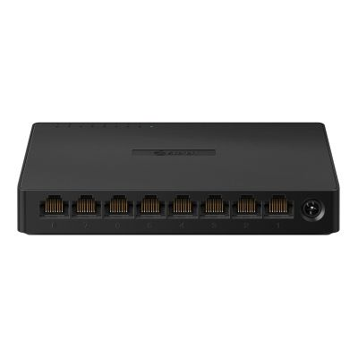

Practica 5
| Elemento | Fotografia | Funcion | IP | Activo / Pasivo |
|---|---|---|---|---|
| Computadora | Procesamieno de datos | |
Si | Activo |
| Router | Punto de conexion entre una red e internet | Si | Activo | |
| Repetidor | Amplificador de señales | Si | Activo | |
| Switch | Conexion entre dispositivos |  | No | Activo |
| Switch | Concentra varias conexiones en un solo lugar | No | Activo | |
| Bridge | Une redes separadas entre computadoras | No | Activo |